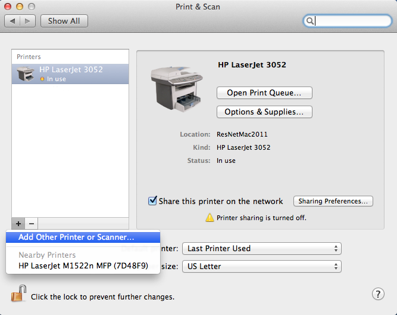

OS X 10.7, 10.8, 10.9 Printer Setup
- Download and Install the Front Desk Printer Drivers from here. If you live in Wells or Freddy, click here. (Please only click on the link once and wait for the download to finish.)

- From the Apple Menu select System Preferences.
- Click on Print & Scan.
- Click on + to add the printer.

- Secondary Click on the Toolbar and select Customize toolbar... (Secondary click: Right-Click or Control+Click).
- Drag the Advanced icon to the Toolbar.
- Click on Done.
- Click on Advanced. (The Advanced screen may take a few minutes to load.)
- Set Type to Windows printer via spoolss, set Device to Another Device and enter the information that corresponds to your residence hall (located below the image).

- Set Print Using to Select Printer Software...
- Select the driver for your Residence Hall from the previous table. Using the filter will make it much easier to find. It will be HP LaserJet 4250 Foomatic/hpijs, HP LaserJet 4350 Foomatic/hpijs, HP LaserJet 9050 Foomatic/hpijs, HP LaserJet 600 M601 M602 M603,or HP LaserJet 4050 Foomatic/hpijs. After you've selected the appropriate driver, click on Add.
- If you live in Wells or Freddy you may see the following dialog box. Make sure the checkbox for Duplex Unit is checked and then click on OK.

- Congratulations you can now Print to the Front Desk!
When Printing you will be asked for your credentials. Enter your BearPass Login and password then click on OK. Your printout will be at the Front Desk with a cover page.